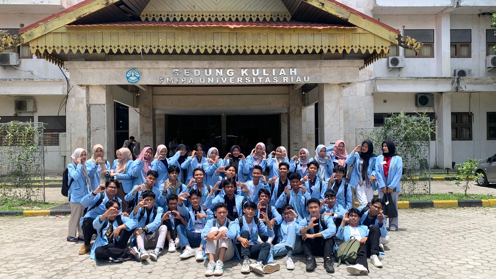

Mari kitaa Gaskannnn
Kelas ribut di dunia perkuliahan adalah kondisi di mana ruang kuliah berubah jadi pasar saham, kantin berjalan, dan warung kopi sekaligus. Mahasiswa ngobrol seru soal drama dosen, gosip kelas lain, bahkan rencana nongkrong, sementara dosen tetap berdiri tegak menjelaskan teori yang akhirnya cuma jadi white noise. Fenomena ini biasanya muncul saat jam terakhir, ketika mata kuliah sudah kalah pamor dengan notifikasi HP, suara krincingan kunci motor, atau rencana “makan di mana habis ini?”. Singkatnya, kelas ribut mahasiswa adalah perpaduan sempurna antara chaos, komedi, dan konspirasi.
 LOGIN ROBLOX